Give a high-level overview of what you implemented in this project. Think about what you've built as a whole. Share your thoughts on what interesting things you've learned from completing the project.
I created a tool that can load and edit mesh files. I also implemented an upsampling algorithm that can take a blocky mesh and return an object that is more detailed. The most interesting aspect of this project for me was seeing how linked lists and linked list operations have a practical purpose. Up until this point, Ive been studying them for interviews and haven't seen any real use case for them.
de Casteljau's algorithm is a recursive algorithm that takes a series of "control points" (a set of points that defines a bezier curve) and generates a new set of control points for a given t. It generates a new point by linearly interpolating between 2 surrounding points according to the formula b0_prime = (1-t)*b0+t*b1. On the next iteration, the algorithm will use this new batch of prime values to calculate another set of values. This continues until only 1 point remains
| 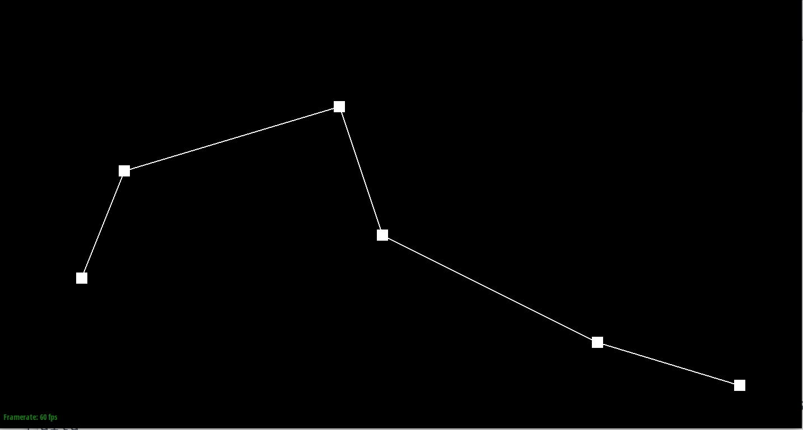 | 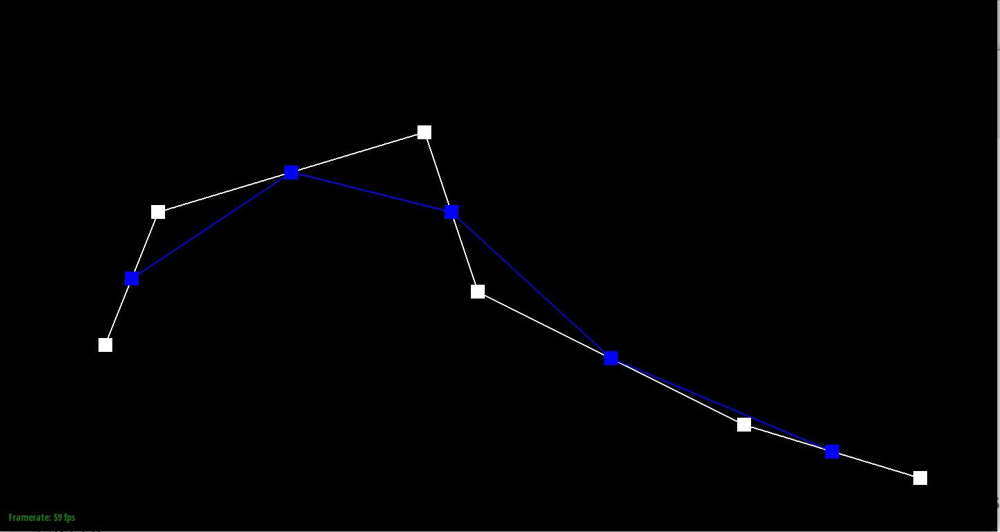 |
| 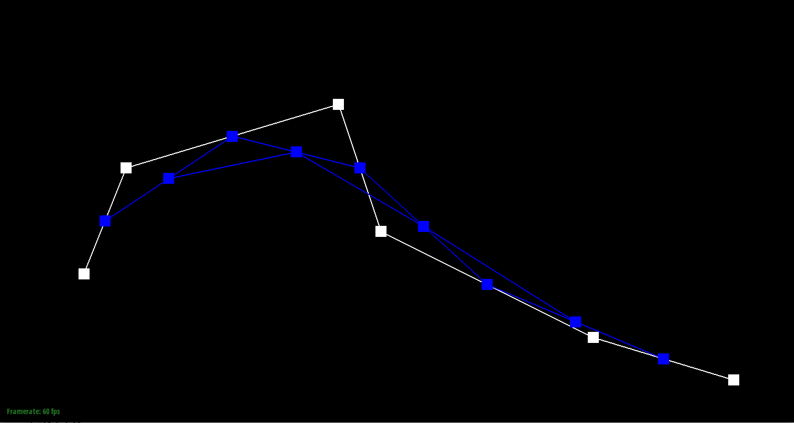 | 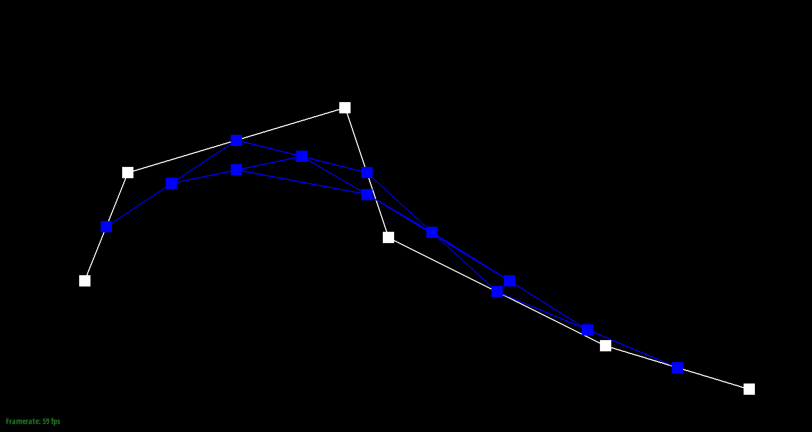 |
| 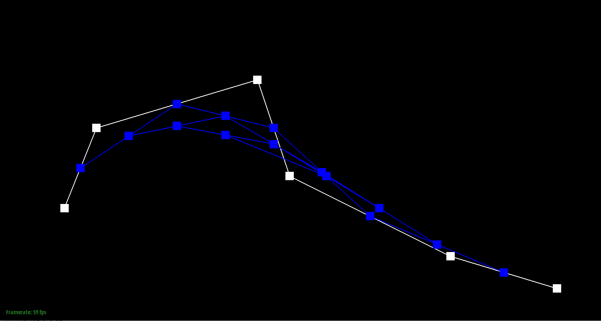 | 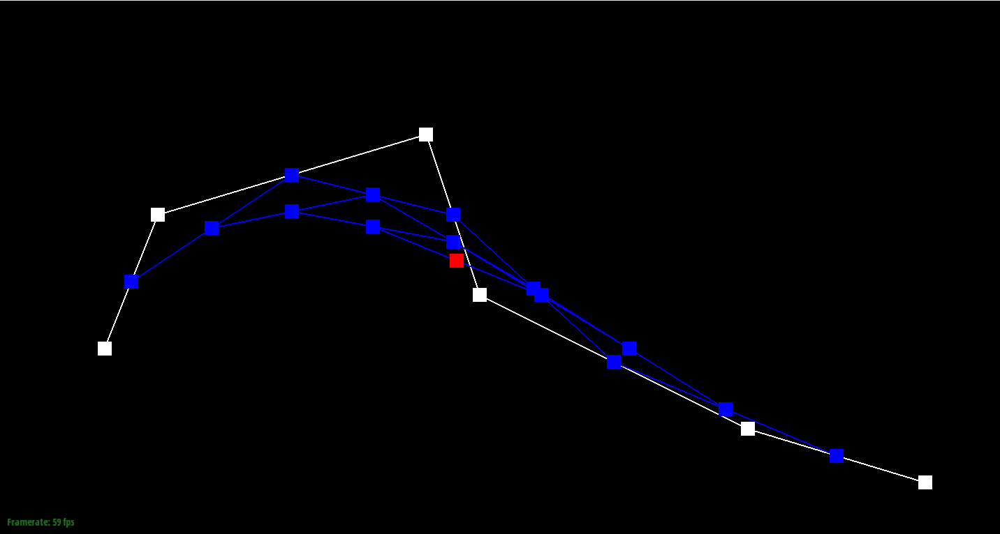 |
| 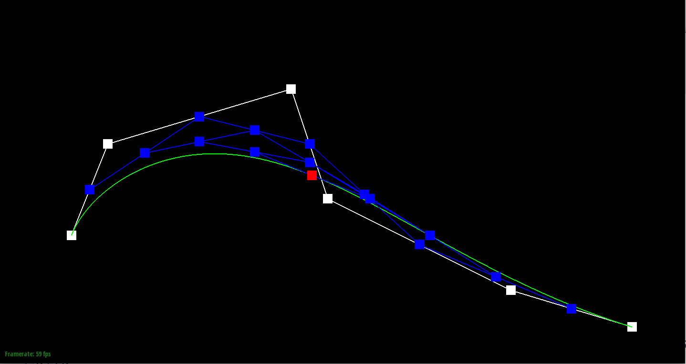 | 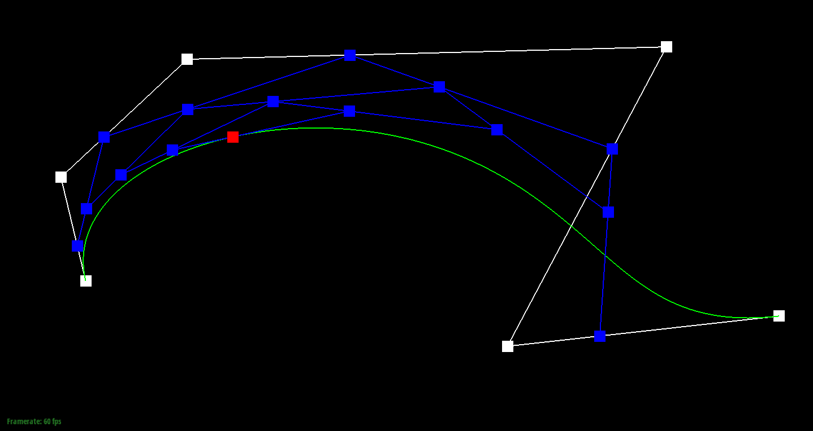 |
de Casteljau's algorithm extends to the 2d case quite easily. We simply look at 4 sets of points and lerp those as we did in the 1d case with respect to u. Then we take the resulting 4 points from those 4 rows, and lerp them with respect to v. I implemented this algorithm exactly as described with a triple for loops.
| 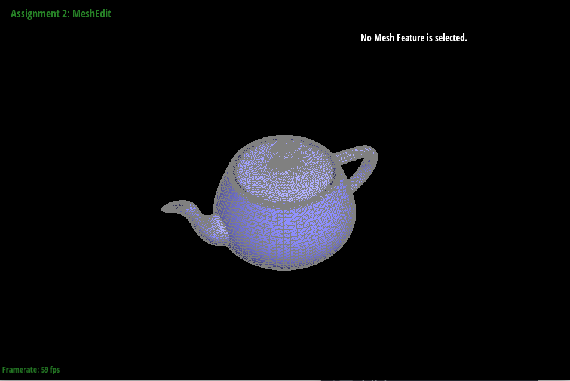 |
Since this function is being called from a vertex, I first get the half edge pointing away that is associated. Then I get its twin and create a new pointer to this value. To get the area weighted average normal of this face I need to take the cross product of the twin (which is facing towards the original vertex) and the half edge that is not associated with the vertex (next next of the twin). I add this to a Vector3D variable. I then move on to the next face (by iterating in a do while loop) by h = h->next()-twin(), which returns the half edge associated with the next face that is pointing towards the original vertex. This process continues for all faces and I exit when we return to the original twin. Then I return a normalized version of this.
| 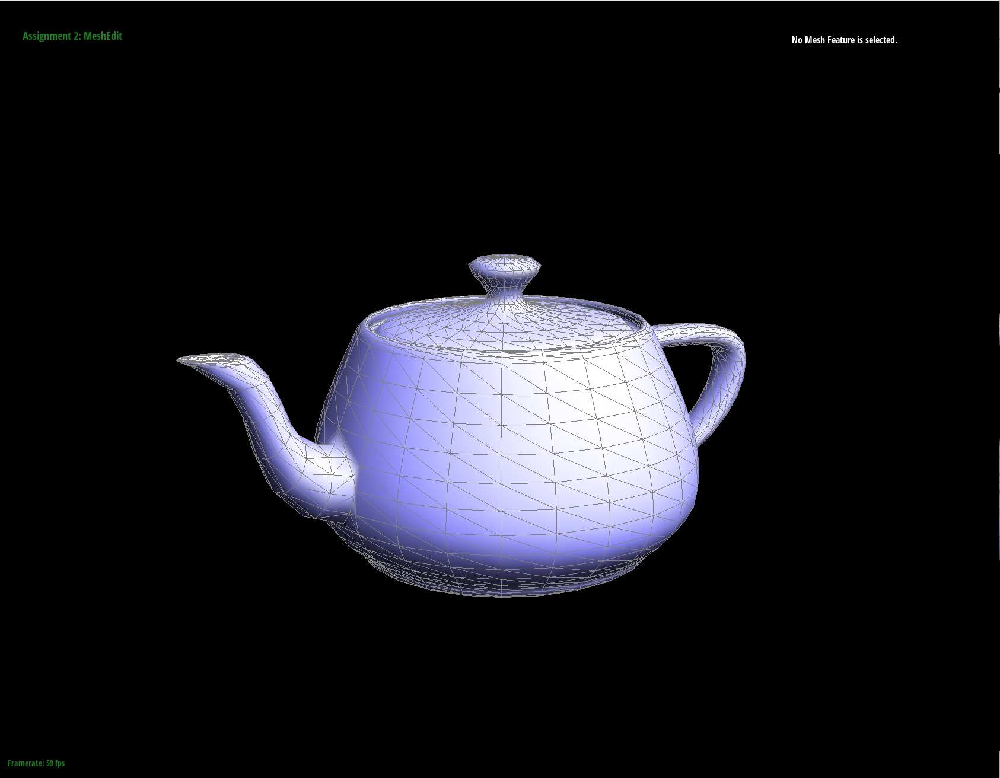 |
I implemented the flip operation by first drawing a picture of 2 connected triangles sharing a common edge. I then labeled all the half edges, edges, vertices, and faces on the diagram. I then drew a second picture of a successful flip operation and then relabeled all the elements. I then meticulously made references to ALL the elements and hand reassigned them. I didnt use the convenience method because I felt it was easier to reassign the pointers one by one. I also didnt have any crazy debugging adventures.
| 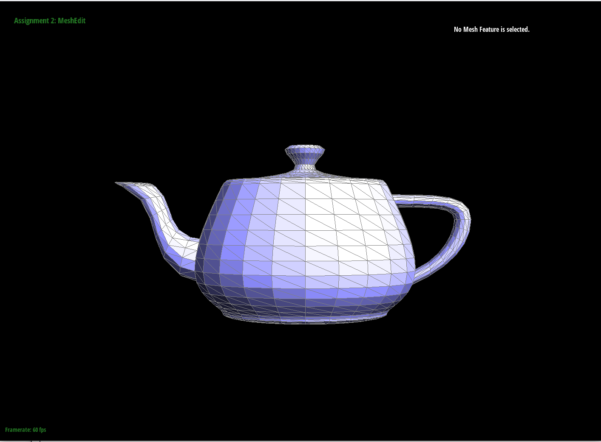 | 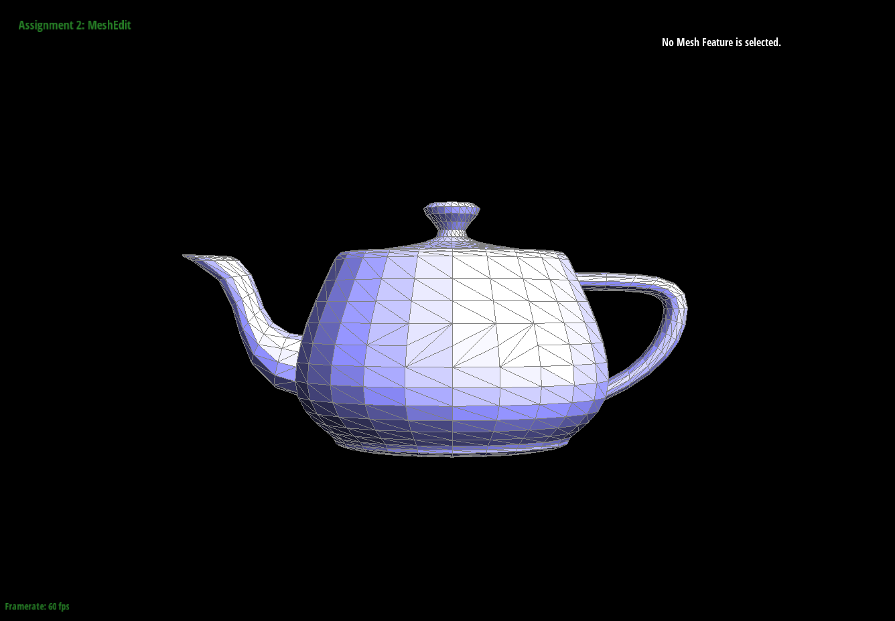 |
I implemented the split operation by first drawing a picture of 2 connected triangles sharing a common edge. I then labeled all the half edges, edges, vertices, and faces on the diagram. I then drew a second picture of a successful split operation and then relabeled all the elements. This involved creating 1 new vertex, 2 new faces, 3 new edges, and 6 new half edges. To assign the position of the new halfedge, I averaged the positions of the 2 vectors associated with e0. I then meticulously hand reassigned all the elements. I didnt use the convenience method because I felt it was easier to reassign the pointers one by one. I also didnt have any crazy debugging adventures.
| 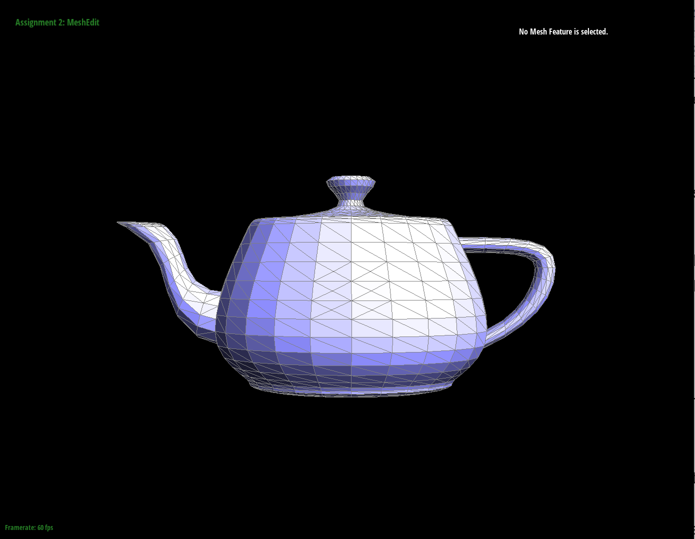 |
I created multiple for loops to carry out this algorithm. I first created a vertex for loop that iterates through each vertex and does a couple things. It appends it to an original vector list, sets the isNew to false, and calculates the new position by using the formula provided. I then created a edge for loop that simply appends all edges to an original edge list and sets the isNew to false. I create a second edge for loop that calculates the new position for each soon to be created vertex. I then iterate through the original edge list and split each of the edges. With the returned vertex I am able to set it to new, set its position to the one previously calculated, set the half edge it points to as old (something I changed in my p5 implementation), and through careful linkedlist operations, set the other 2 edges to new. Now, I iterate through the edges again and check if its new. If it is, I get both half edges and their vertexes. If 1 vertex is old and 1 is new, then I flip that edge. Finally I create a for loop that iterates through the original vector list and updates all of its positions to the ones previously calculated. This solution is definitely not the most efficient, but it was the simplest to implement and debug.
| 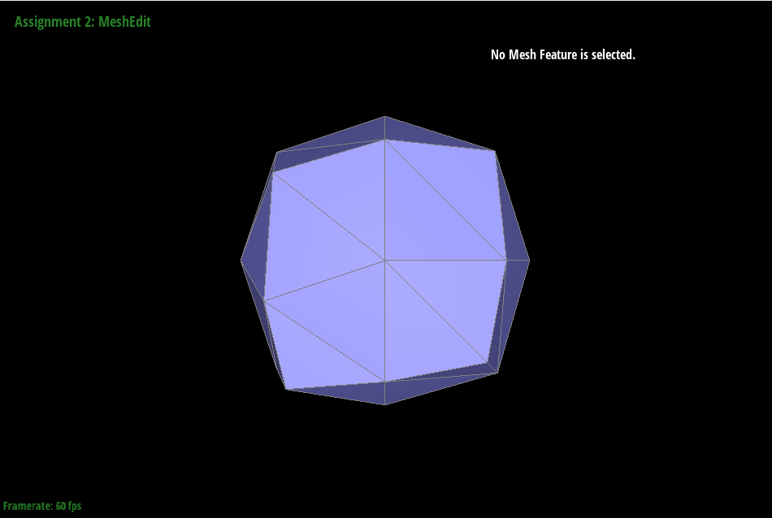 | 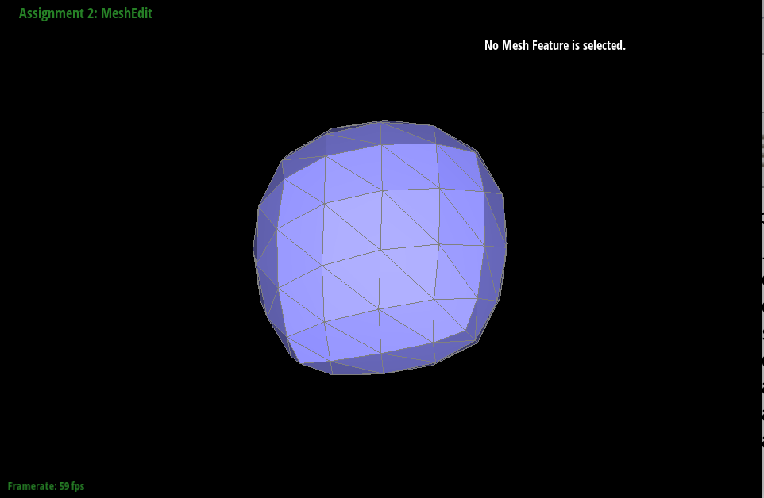 | 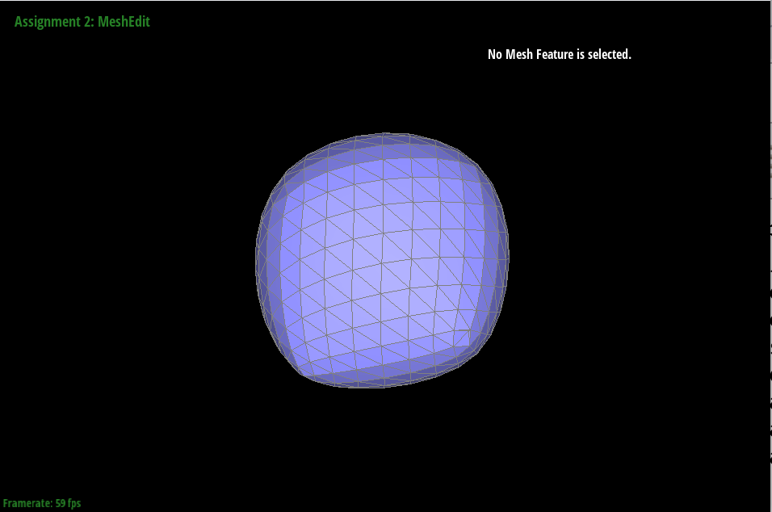 |
Sometimes "dimples" form when I use loop subdivision especially on the corners (as can be seen in the third image. I try and alleviate this effect by pre splitting some of the edges. Its important to note that over pre splitting leads to a completely different shape.
If you are not participating in the optional mesh competition, don't worry about this section!